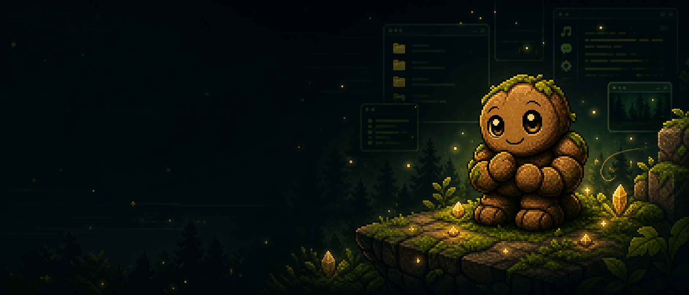
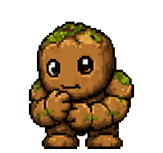
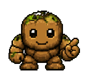
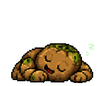
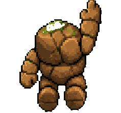

Weather, news interests, calendar-like reminders, and current projects.

Voice-first AI companion for your desktop
Meet Rocky, the AI pet that lives on your desktop.
It talks, remembers, schedules, nudges rarely, sees your screen on request, and slowly becomes part of your routine.
3 companions
Daily rhythm
Opt-in screen vision
Not a novelty pet
Rocky turns tiny moments into a daily rhythm.
The magic is not that a pet walks around. It is that the pet remembers the thread, respects your focus, and shows up at the right time.
Only when something looks genuinely stuck, urgent, or worth remembering.
Loose tasks, unfinished work, and tomorrow's first good step.
Pets available
Choose the companion that fits your mood.
Each pet has a voice, animation set, and personality. Customize the name and behavior later in the Control Center.
Selected companion
Rocky
Warm, loyal, curious, and gently playful.
Male rock golem
Voice: Puck

You were debugging this yesterday. Want to continue?
Beyond novelty
A pet that keeps the thread.
The pet remembers what matters and turns it into tiny, useful moments across the day.
DigestYour morning brief, tuned to your topics.
ContinueUnfinished work returns without the whole backstory.
NudgeRare help, cooldowns, and user controls.
Try the feeling
Say one thing. Your pet turns it into action.
These are the small moments that make the pet feel alive: it understands intent, keeps the context, and gives the user control.

Morning digest
A personalized start
Rocky gathers your reminders, preferred news, weather, unfinished work, and the first useful next step.
What Rocky can do
Small pet. Serious assistant instincts.
Rocky handles everyday computer life, then hands heavier work to specialist tools when needed.
Realtime voice
Talk naturally. Rocky replies with the selected pet's personality and voice.
Fresh answers
Weather, latest news, local context, app/file help, and screen questions.

Useful memory
Projects, people, work hours, interests, dislikes, and reminder style.

Human rhythm
Sleeps after inactivity, wakes with intent, and follows a daily schedule.
Recurring tasks
One-time reminders, habits, weekly checks, and visible task controls.

Project handoff
Rocky can ask Codex to inspect or build projects while staying the friendly layer.
Trust by design
Screen vision is explicit. Nudges are controlled.
Screen awareness is user-controlled, visible, and configurable. Memory, reminders, routines, and recent activity stay visible in the Control Center.
Windows desktop app
Bring Rocky onto your screen.
Install the pet, pick your companion, and let it grow into your routine.
Sign in to download
v2.0.1
Google sign-in required before download.